Code 4 -- Lines, Hairpins -- parameter structure |
P1 code number (4)
P2 staff number
P3 horizontal position, left end
P4 vertical position, left end
P5 vertical position, right end
P6 horizontal position, right end
P7 dashes, dots, wiggles
P8 dash length, dot size, etc.
P9 space between dashes, dots
P10 line thickness
P11 vertical bracket, arrow, left end
P12 vertical bracket, arrow, right end
P13 rotation
P14,15 partial crescendos
P15 vertical line offsets
P16,17,18 line end point offsets
Multi-point Lines
P18,19 Multi-point line size factors
P20 Multi-point line rotation
P21 Multi-point line thickening
P25
P26
Jump to Letter Edit Commands
Jump to Function Key Setup
Jump to Multi-point Slurs
To input a Line, type any of the below mnemonics or click on the New Item button and then on one of the line buttons. The item will appear on the highest staff currently on the screen. If there is no staff on the screen, the item will appear in a position relative to staff 1. The item name may be followed by a series of numbers (n2, n3... ) which will further specify its characteristics by setting P2, P3, etc.
LINE = line
DASH = dashes
CRH = crescendo "hairpin"
DCH = decrescendo "hairpin"
ARP = vertical arpeggiation
When the item appears it is directly in edit mode and may be moved, etc. with the various edit commands. Hitting <enter> or
X leaves edit mode.
P3, 4, 5, 6 line end points
Lines use four parameters to specify position.
P3 = left end horizontal position.
P4 = left end vertical position.
P5 = right end vertical position.
P6 = right end horizontal position.
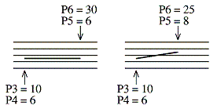
Only normal and dashed lines may be tilted in this manner. For all other line types use P13 rotation.
For vertical lines (except dotted lines) P6 must equal P3. P4 normally sets the bottom of the line and P5 the top. An alternative method is to rotate any horizontal line with P13 =
-90. Lines may be change to vertical by typing VER;
HOR makes horizontal.
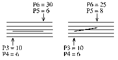
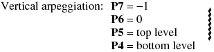
The default spread of hairpins is 2.3 scale steps. In effect, P7 = 0 is the
same as P7 = 2.3 and P7 = -1 is the same as P7 = -2.3. This may be
changed by adding positive amounts to P7 (for crescendo hairpins) or
negative amounts (for decrescendo hairpins). In these instances, P7 will
not equal 0 or -1. The special number (999) in P5 tells SCORE this is a hairpin.
P10 can thicken the lines. 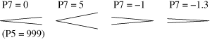
To get hairpins as dashed lines set P11 = 1. P8 can set the length of each dash, P9 sets the size of the spaces.
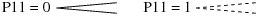
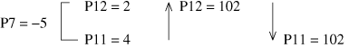
Also vertical lines may be produced by setting P7 = -5. The height of the
line will depend on the settings of P4 and P5. Bracket endings and arrow
heads may be added with P11 and P12.
In this case, if P6 is set to 0, the vertical line will be considered by the
Justify routine. Putting any number in P6 will cause the line to be ignored
by the Justify routine. (This is similar to, but not exactly the same as with
the vertical arpeggio wavy line where P6 must be 0 and P7 = -1. In this
case the item will be considered by the Justify routine. If you want a
vertical wavy line that is ignored by the Justifier, you must create a
horizontal wavy line -- setting the right extent with a number in P6 -- and
then rotate the item by setting P13 to -90.)
When rotated, the vertical line (P7 = -5) may be used for portamento
lines between notes which then will be justified correctly.
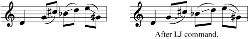
Follow these steps:
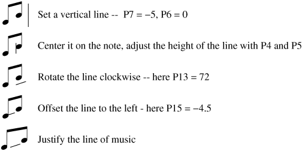
P8 sets the length of the dash, or the horizontal size of the wave
in a wavy line, or the size of the dot.
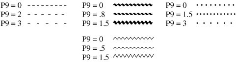
P9 sets the size of the space between dashes or dots, or the height
of the wave in wavy lines. If P9 = 0, the space is the same as the
width of the dash. Default values are used for dots and wavy lines.
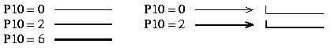
P10 controls the thickness of the line. (On PostScript printers only.)
Toolbar buttons:
= add thickness 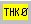
P11 adds a bracket or arrow head to left end of the line.
P12 adds a bracket or arrow head to right end of the line.
The number sets the length of the vertical line or the
spread of the arrow head.
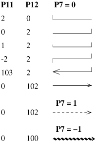
Toolbar
buttons:
= left bracket
= decrease vertical line 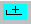
= right bracket = decrease vertical line = increase vertical line
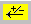 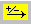
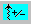 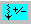
P13 rotation by degrees. A positive value rotates
clockwise, a negative value counter-clockwise.
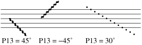
P14, 15 partial hairpins.
IMPORTANT NOTE: The following examples presume that you have clicked on YES in the New Slur Features box in the Preferences dialog. If you are editing older files and require no changes, you should click on NO.
These parameters are used to create partial hairpins or create a gap in a hairpin. When creating these hairpins, P3 and P6 must always give its FULL length. For partial hairpins, only P14 is used. If P14 is positive, the number indicates the percentage of the hairpin which will be visible. In the following example you may type either .48 or 48 as the percent. If P14 is negative, the number indicates the percentage of the hairpin which will be invisible.
A good method for creating such hairpins is to first input the full hairpin. Then move it up or down for easy visibility and adjust P14 as needed.
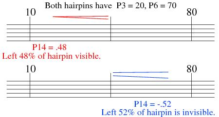
For a gap in a hairpin, set P14 to the position of the center of the gap (as a fraction of the entire length.) P15 must be a negative number, in horizontal steps, indicating the width of the gap. In the following, for P14 you may type either .455 or 45.5 (as a percentage.)
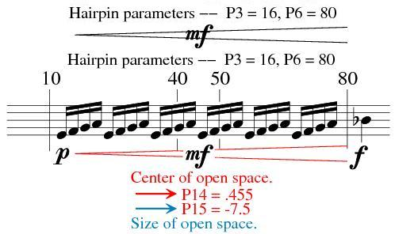
A "floating" partial hairpin is created as above, but with P15 as a positive number. In the following example two hairpinss are needed; one with a gap and another to make the inner partial.
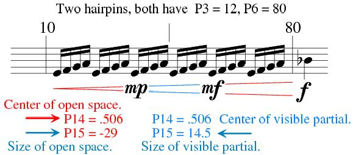
P16, 17, 18 end point offsets.
When P16 = 1, P17 and P18 can set offsets for the left and right ends of lines. The offsets are figured from the exact P3 and P6 values.
****** Multi-point lines: P7 = 100.
P8 = added horizontal point 1, P9 = vertical point 1.
P10 = added horizontal point 2, P11 = vertical point 2.
P12 = added horizontal point 3, P13 = vertical point 3.
P14 = added horizontal point 4, P15 = vertical point 4.
P16 = added horizontal point 5, P17 = vertical point 5.
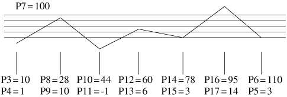
P18 horizontal size factor.
P19 vertical size factor.
If P19 = 0, P18 controls both horizontal and vertical factors.
(See Code 5 for using this feature to make irregular slur shapes.)
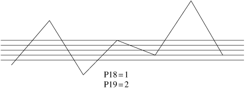
P18 multiplies the values in the horizontal parameters (P8, 10, 12, 14, 16).
P19 multiplies the values in the vertical parameters (P9, 11, 13, 15, 17).
P20 rotation of multi-point line.
P21 thickening of multi-point line.
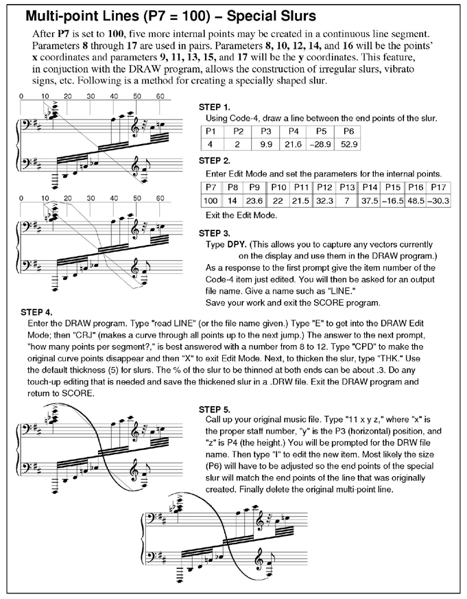
P25 layer number.
See Color Control.
P26 color/gray value.
See Color Control.
___________________________________________________________________________
----- Shortcut Letter Commands while editing Lines --------------------------
ARP = arpeggio (P7)
ARU = arpeggio, arrow up
ARD = arpeggio, arrow down
CRH = crescendo hairpin
DCH = decrescendo hairpin
DTS = dotted line
DSH = dashes
DSHL = default dash length (or dot size) (P8)
DSHL- = shorten dashes
DSHL+ = lengthen dashes
DSHS = default dash space (P9)
DSHS- = shorten dash space
DSHS+ = lengthen dash space
HOR = change to horizontal line
VER = change to vertical line
LIN = normal line
LBR = left bracket on/off (P11)
LBR- = shorten bracket (-.5)
LBR+ = lengthen bracket (+.5)
LBRD = left bracket down
RBR = right bracket on/off (P12)
RBR- = shorten bracket (-.5)
RBR+ = lengthen bracket (+.5)
RBRD = right bracket down
LAR = left arrow on/off (P11)
RAR = right arrow on/off (P12)
ROT = rotation zero (P13)
ROT+ = rotation clockwise
ROT- = rotation counter-clockwise
ROT n = rotation n degrees (+/-)
WIG = heavy wavy line (wiggle) (P7)
VIB = thin wavy line (vibrato)
SAW = saw tooth line
SAWX = heavy saw tooth line (P11)
THK = default thickness
THK+ = thicken line (P10)
SPD = hairpin default spread (P7)
SPD+ = hairpin spread plus
SPD- = hairpin spread minus
LOFF n = left end offset n
(P16, 17)
LOFFM = left end offset -.5
LOFFP = left end offset +.5
LOFF = left end offset 0
ROFF n = right end offset n (P16, 18)
ROFFM = right end offset -.5
ROFFP = right end offset +.5
ROFF = right end offset 0
XOFF = turn off all offsets
Function Key Setup for Code 4
| F1 Help |
F2 Back to Previous Item |
F3 Forward to Next Item |
F4 Back to Previous Item, Same Code # |
F5 Forward to Next Item, Same Code # |
F6 . . . |
| F7 Move Left End Only |
F8 Move Right End Only |
F9 Exit from Edit Mode ( X ) |
F10 . . . |
F11 Delete, Move to Previous, Same Code # |
F12 Delete, Move to Next, Same Code # |